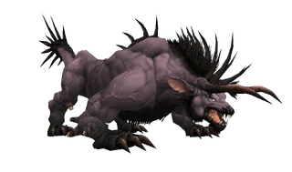
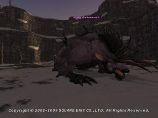
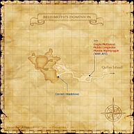

Description
Behemoth's Dominion is an outdoor area in Qufim.
Map

Involved in Quests / Missions
| Quest / Mission | Type | Starter | Location |
|---|---|---|---|
| Beat Around the Bushin | General | Vola | Lower Jeuno (pos=J-8) |
| The Talekeeper's Gift | WAR AF | Deidogg | Bastok Mines (pos=H-6) |
Notorious Monsters
| Name | Level | Drops | Steal | Family | Spawns | Notes |
|---|---|---|---|---|---|---|
| Behemoth | 80 | Behemoth Hide Comet Tail Thundercloud | — |  BehemothsImage source | — | A, T(S) |
 King BehemothImage source | 85 | Behemoth Hide Behemoth Tongue Behemoth Horn Defending Ring Pixie Earring Shining Cloth Aquarian Abjuration: Feet Earthen Abjuration: Legs Martial Abjuration: Legs Wyrmal Abjuration: Head | — | Behemoths | — | A, T(S) |


Regular Monsters
| Name | Level | Drops | Steal | Family | Spawns | Notes |
|---|---|---|---|---|---|---|
| Bhuta | 46-48 | Cotton Cloth Luminicloth | Cotton Cloth |  GhostsImage source GhostsImage source | 2 | A, H, HP |
| Demonic Weapon | 45-46 | — | — |  Evil WeaponsImage source Evil WeaponsImage source | 2 | Warrior; A, H, M |
| Demonic Weapon | 45-46 | — | — | Evil WeaponsImage source | 2 | Red Mage; A, H, M |
| Greater Gayla | 42-44 | Bat Fang Bat Wing Fiend Blood | — |  Giant BatsImage source Giant BatsImage source | 6 | A, H |
| Lesser Gaylas | 40-42 | Bat Fang Bat Wing | — |  Bat TriosImage source Bat TriosImage source | 7 | A, H |
| Light Elemental | 48-50 | Light Cluster | — |  ElementalsImage source ElementalsImage source | 5 | During light weather; A, M |
| Lost Soul | 45-47 | Bone Chip Stun | Bone Chip |  SkeletonsImage source SkeletonsImage source | 2 | A, H, HP |
| Master Coeurl | 45-50 | Coeurl Hide Coeurl Meat Coeurl Whisker | — |  CoeurlsImage source CoeurlsImage source | 2; Spawn Bhuta at night | A, S, Sc |
 Thunder ElementalImage source Thunder ElementalImage source | 48-50 | Lightning Cluster | — | Elementals | 5 | During lightning weather; A, M |
Event Monsters
| Name | Level | Drops | Steal | Family | Spawns | Notes |
|---|---|---|---|---|---|---|
| Ancient Weapon | 66 | — | — | Evil WeaponsImage source | 1 | Spawned Mission: Headstone Pilgrimage; A, H, M |
| Doglix Muttsnout | — | — | — |  GoblinsImage source GoblinsImage source | 1 | Spawned Quest: The Talekeeper's Gift; A, L, S |
| Legendary Weapon | 65 | — | — | Evil WeaponsImage source | 1 | Spawned Mission: Headstone Pilgrimage; A, H, M |
| Moxnix Nightgoggle | — | — | — | GoblinsImage source | 1 | Spawned Quest: The Talekeeper's Gift; A, L, S |
| Picklix Longindex | — | — | — | GoblinsImage source | 1 | Spawned Quest: The Talekeeper's Gift; A, L, S |
Story walkthroughs in this area
| Story | Mission / quest |
|---|---|
| RoZ 5 | Headstone Pilgrimage |
References
External references describe their own server or retail rules. Documented Zenith changes take precedence.
Map credits: Map 1 — HorizonXI Wiki. Original game maps © SQUARE ENIX; redrawn maps retain the credited authorship and license.

Additional level-75 reference


|
Home to the Behemoths of Vana'diel, this cavernous subterranean dwelling is buried deep inside Qufim Island. In addition to the Behemoths, scores of undead also roam around seeking to surprise unsuspecting adventurers. Connecting Areas
|
Involved in Quests/Missions
| Quest | Type | Starter | Location |
| Beat Around the Bushin | General | Vola | Lower Jeuno (J-8) |
| The Talekeeper's Gift | AF (WAR) | Deidogg | Bastok Mines (H-6) |
| Mission | Country | Starter | Location |
| Zilart Mission 5:Headstone Pilgrimage | Zilart | --- | --- |
Weather
| Thunder | Light | ||
|
Elemental Map | |||
Notorious Monsters Found Here
| Name | Level | Drops | Steal | Family | Spawns | Notes |
|---|---|---|---|---|---|---|
| Ancient Weapon
|
66 - 66 | Evil Weapons | ||||
| Behemoth
|
80 - 80 | Behemoths | ||||
| Doglix Muttsnout
|
Unknown | Goblins | ||||
| King Behemoth
|
85 - 85 | Behemoths | ||||
| Legendary Weapon
|
65 - 65 | Evil Weapons | ||||
| Moxnix Nightgoggle
|
Unknown | Goblins | ||||
| Picklix Longindex
|
Unknown | Goblins |
|
HP = Detects Low HP; M = Detects Magic; Sc = Follows by Scent; T(S) = True-sight; T(H) = True-hearing JA = Detects job abilities; WS = Detects weaponskills; Z(D) = Asleep in Daytime; Z(N) = Asleep at Nighttime |
Mobs Found Here
| Name | Level | Drops | Steal | Family | Spawns | Notes |
|---|---|---|---|---|---|---|
| Bhuta
|
46 - 48 | Ghosts | ||||
| Demonic Weapon
|
45 - 46 | Evil Weapons | ||||
| Greater Gayla
|
42 - 44 | Giant Bats | ||||
| Lesser Gaylas
|
40 - 42 | Bat Trios | ||||
| Light Elemental
|
48 - 50 | Elementals | ||||
| Lost Soul
|
45 - 47 | Skeletons | ||||
| Master Coeurl
|
45 - 50 | Coeurls | ||||
| Thunder Elemental
|
48 - 50 | Elementals |
|
HP = Detects Low HP; M = Detects Magic; Sc = Follows by Scent; T(S) = True-sight; T(H) = True-hearing JA = Detects job abilities; WS = Detects weaponskills; Z(D) = Asleep in Daytime; Z(N) = Asleep at Nighttime |
Adapted from Eden Wiki: Behemoth's Dominion · Contributors and history · CC BY-SA 4.0. Revision 45942. Layout, links and optional background text adapted for Zenith.